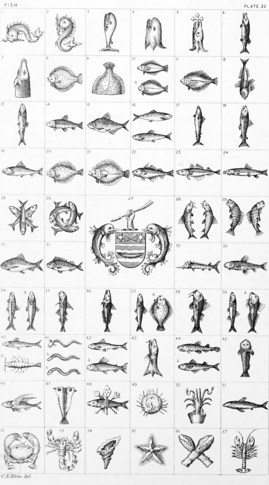

Plate 32.

Plate 32.
- Dolphin Naiant embowed
- Dolphin Hauriant
- Whale Hauriant
- Whale's head erased and erect
- Conger eel's head erased and erect
ingulphant of a cross crosslet
fitchée, or a conger eels head
erased and erect, the jaw pierced
with a cross-crosslet fitchy
- Pike, or Luce hauriant also termed
Ged.
- Demi Luce ; or Pike's Head couped
- Turbot naiant
- Tail of a Turbot erect, or Demi
Turbot tail erect
- Buttfish, a. Sole naiant
- Flounder also termed a Fluke, and
Butt
- Gurnet, or Gurnard; Diving or
Urinant
- Herring, Cob-Fish, or Sea-Cob
hauriant
- Tench naiant
- Bream naiant
- Two Fish counter-naiant
- Mackerel hauriant
- Salmon hauriant
- Trout naiant
- Plaice naiant
- Brill naiant
- Cod naiant
- Whiting naiant
- Loach naiant
- Three Fish Interchangeably posed.
See Teste a la Queve
- Three Salmons fretted
- The Watermans Company, London.
Barry wavy of six ar, and az. on
the middle bar a boat or, on a
chief of the second Two oars in
Saltire of the third betw. two
cushions of the first, tasselled or.
Crest a dexter hand holding an
oar or. Supporters Two Dolphins
az. finned or.
- Two Barbels respecting naiant
- Two Carp hauriant addorsed, or
endorsed
- Roach naiant
- Perch naiant
- Sturgeon naiant
- Gudgeon naiant
- Smelt, or Sparling hauriant.
a. Chub hauriant
- Haddock hauriant
- Hake hauriant
- Pilchard hauriant. (a) Burbot hauriant
- Mullet hauriant
- Minnow hauriant. (a) Tubb-Fish
hauriant
- Sprat naiant. (a) shrimp
- Eel, naiant. (a) Conger Eel naiant
b. Lamprey, naiant
- Sardine naiant. (a) Grayling naiant
- Ling's head erased and erect
- Dog Fish naiant. a. Brit naiant
also termed a Bret
- Chabot hauriant
- Flying Fish
- Stockfish
- The Fish of Mogul, per pale or and
vert, banded of the last and gu.
surmounting a shaft in pale and
the Goog and Ullum in Saltire or,
- Sea-Urchin
- Cuttle, or Ink-Fish
- Shark naiant
- Crab
- Scorpion
- Whelk
- Star-Fish
- Lobster's-claws in Saltire
- Lobster